CASA NOVA / SALA
Cinco maneiras de estar.
A mesma sala, cinco disposições para conversar, ler e ver filmes. Tons areia, rosa suave, madeira e palhinha, a partir das vossas referências. Selecionem uma opção e alternem entre o mobiliário e os pontos de luz.
OPÇÃO 01 · A minha escolha para começar
Equilíbrio e conversa
Parede A · ≈108”
3 lugares de cinema + 2 poltronas
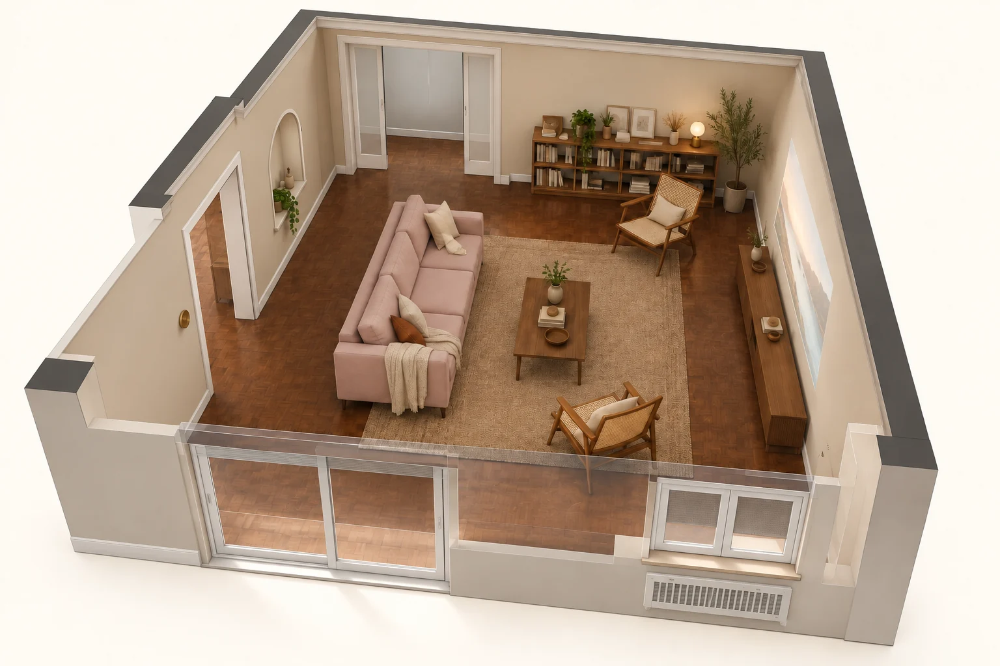
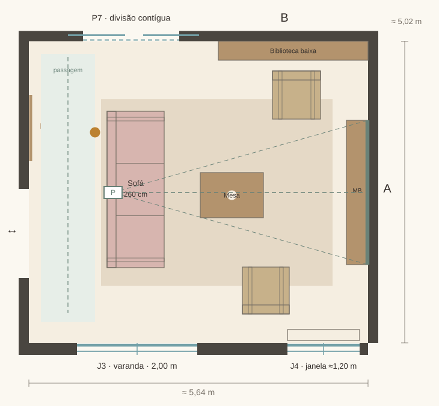
Plantas conceptuais · medidas em metros · orientação igual à planta original
A disposição
A combinação mais equilibrada: sofá de 260 cm, duas poltronas leves e uma biblioteca baixa no fundo. O eixo de entrada fica livre e a parede de projeção mantém-se limpa.
O compromisso
As poltronas servem sobretudo conversa e leitura; podem rodar para o filme. O sofá flutuante pede alimentação próxima para um candeeiro.
Passagens e projeção
1,30 m atrás do sofá; 1,17 m no fundo.
Olhos-parede: ≈3.79 m.
Lente-parede: ≈4.24 m; razão de projeção ≈1.77, a validar pelo fabricante.
Tomada de apoio junto ao sofá, com percurso sem cabo na passagem.
Coordenadas dos pontos de luz
Origem no canto inferior esquerdo da planta; x para a direita, y para P7. Alturas e medidas a confirmar em obra.
| Ponto | x ; y (m) | Grupo | Intenção |
|---|---|---|---|
| G1 | 2.80 ; 1.00 | C1 | Plafon opalino; ambiente junto à fachada |
| G2 | 2.80 ; 4.10 | C1 | Plafon opalino; ambiente junto ao fundo |
| A1 | 0.00 ; 4.55 | C2 | Aplique lateral ao nicho; h proposta 1,80 m |
| N1 | 0.00 ; 3.50 | C3 | Luz indireta no nicho; fonte oculta |
| P | 1.40 ; 2.50 | AV | Posição ilustrativa da lente; ajustar ao equipamento. |
OPÇÃO 02 · Mais conforto para filmes
Cinema com chaise-longue
Parede A · ≈108”
3-4 lugares no sofá + 1 poltrona
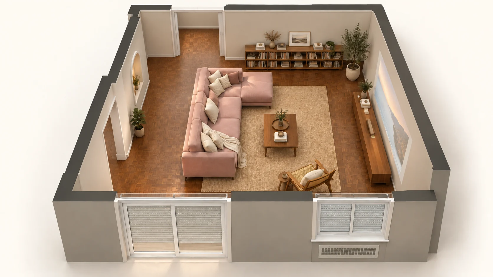
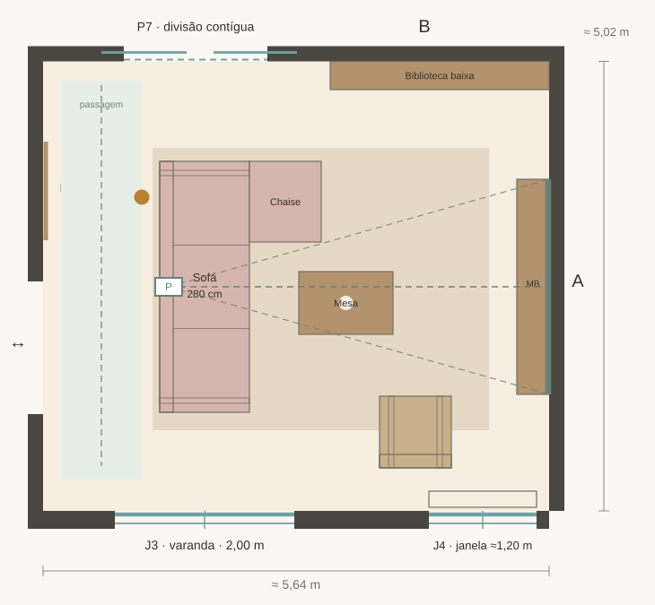
Plantas conceptuais · medidas em metros · orientação igual à planta original
A disposição
Sofá de 280 cm com chaise na extremidade do fundo. A extensão fica longe do acesso à varanda. Uma poltrona de palhinha completa o conjunto e o centro continua legível.
O compromisso
A chaise ocupa mais área e torna a disposição menos flexível. Usar mesa de centro pequena e móvel baixo com pouca profundidade.
Passagens e projeção
1,30 m atrás do sofá; 1,12 m no fundo.
Olhos-parede: ≈3.74 m.
Lente-parede: ≈4.24 m; razão de projeção ≈1.77, a validar pelo fabricante.
Tomada de apoio na extremidade do sofá; comando de cinema acessível sentado.
Coordenadas dos pontos de luz
Origem no canto inferior esquerdo da planta; x para a direita, y para P7. Alturas e medidas a confirmar em obra.
| Ponto | x ; y (m) | Grupo | Intenção |
|---|---|---|---|
| G1 | 2.80 ; 1.00 | C1 | Plafon opalino; ambiente junto à fachada |
| G2 | 2.80 ; 4.10 | C1 | Plafon opalino; ambiente junto ao fundo |
| A1 | 0.00 ; 4.55 | C2 | Aplique lateral ao nicho; h proposta 1,80 m |
| N1 | 0.00 ; 3.50 | C3 | Luz indireta no nicho; fonte oculta |
| P | 1.40 ; 2.50 | AV | Posição ilustrativa da lente; ajustar ao equipamento. |
OPÇÃO 03 · Mais lugares para receber
Dois sofás, sala social
Parede A · ≈108”
3 lugares frontais + 2 transversais
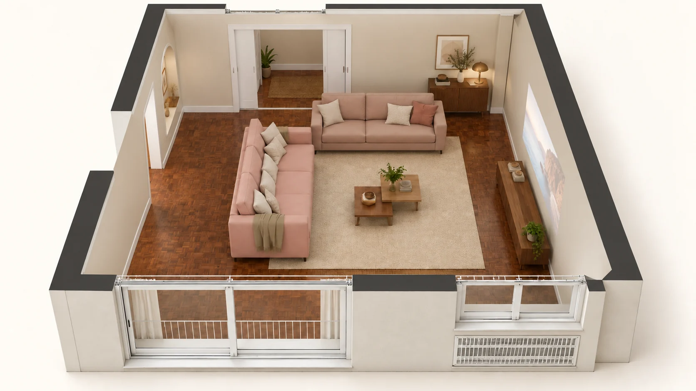
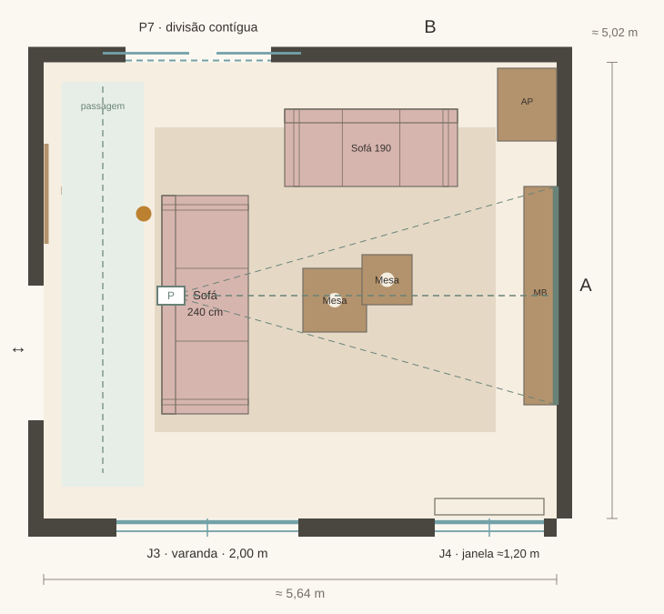
Plantas conceptuais · medidas em metros · orientação igual à planta original
A disposição
Um sofá de 240 cm enfrenta a projeção; um segundo sofá de 190 cm fecha o grupo em L aberto. Duas mesas pequenas permitem adaptar o centro para visitas e jogos.
O compromisso
Só o sofá principal fica de frente para o filme. O segundo favorece a conversa e exige rodar o corpo para ver a projeção; é a proposta mais social.
Passagens e projeção
1,30 m atrás do sofá principal; entrada pela faixa esquerda.
Olhos-parede: ≈3.79 m.
Lente-parede: ≈4.24 m; razão de projeção ≈1.77, a validar pelo fabricante.
Tomadas para candeeiros nas duas extremidades do conjunto, fora dos percursos.
Coordenadas dos pontos de luz
Origem no canto inferior esquerdo da planta; x para a direita, y para P7. Alturas e medidas a confirmar em obra.
| Ponto | x ; y (m) | Grupo | Intenção |
|---|---|---|---|
| G1 | 2.80 ; 1.00 | C1 | Plafon opalino; ambiente junto à fachada |
| G2 | 2.80 ; 4.10 | C1 | Plafon opalino; ambiente junto ao fundo |
| A1 | 0.00 ; 4.55 | C2 | Aplique lateral ao nicho; h proposta 1,80 m |
| N1 | 0.00 ; 3.50 | C3 | Luz indireta no nicho; fonte oculta |
| P | 1.40 ; 2.45 | AV | Posição ilustrativa da lente; ajustar ao equipamento. |
OPÇÃO 04 · Mais espaço para livros e um canto calmo
Biblioteca e leitura
Parede A · ≈99”
3 lugares frontais + 1 de leitura
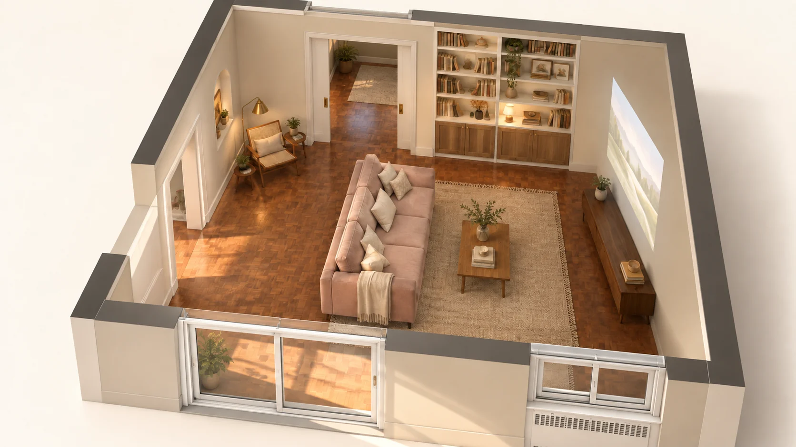
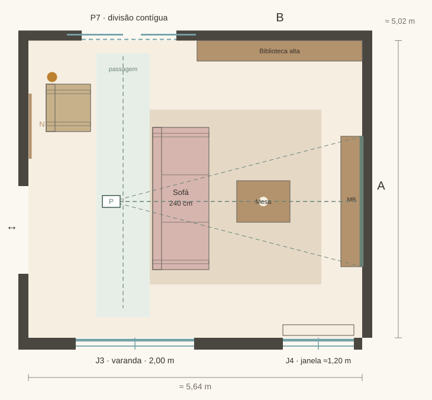
Plantas conceptuais · medidas em metros · orientação igual à planta original
A disposição
O sofá de 240 cm avança para o centro. A faixa libertada junto ao nicho recebe uma poltrona de leitura e a parede do fundo uma estante mais generosa. A projeção reduz ligeiramente para 99 polegadas.
O compromisso
O sofá aproxima-se da imagem. A estante alta fica apenas no fundo; a parede de projeção continua sem prateleiras ou quadros.
Passagens e projeção
Corredor de 1,05 m junto à poltrona; 1,47 m no fundo.
Olhos-parede: ≈2.99 m.
Lente-parede: ≈4.24 m; razão de projeção ≈1.93, a validar pelo fabricante.
Tomada para candeeiro de leitura ao lado da poltrona e alimentação da estante.
Coordenadas dos pontos de luz
Origem no canto inferior esquerdo da planta; x para a direita, y para P7. Alturas e medidas a confirmar em obra.
| Ponto | x ; y (m) | Grupo | Intenção |
|---|---|---|---|
| G1 | 2.80 ; 1.00 | C1 | Plafon opalino; ambiente junto à fachada |
| G2 | 2.80 ; 4.10 | C1 | Plafon opalino; ambiente junto ao fundo |
| A1 | 0.00 ; 4.55 | C2 | Aplique lateral ao nicho; h proposta 1,80 m |
| N1 | 0.00 ; 3.50 | C3 | Luz indireta no nicho; fonte oculta |
| E1 | 4.25 ; 5.01 | C2 | Alimentação para luz integrada na estante |
| P | 1.40 ; 2.30 | AV | Posição ilustrativa da lente; ajustar ao equipamento. |
OPÇÃO 05 · Alternativa com o eixo rodado
Cinema para o fundo
Parede B · ≈99”
3 lugares frontais + 2 poltronas móveis
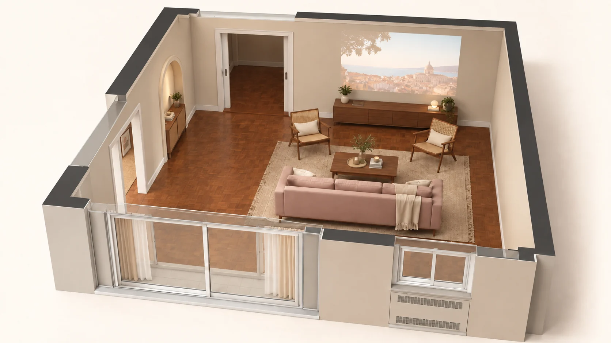
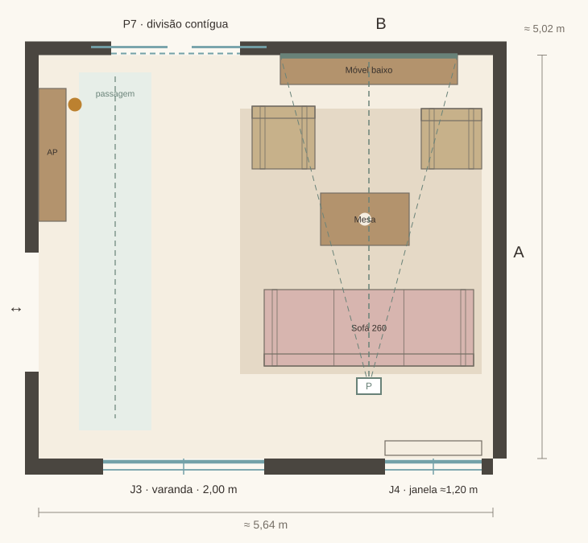
Plantas conceptuais · medidas em metros · orientação igual à planta original
A disposição
O sofá de 260 cm fica paralelo à fachada e olha para o pano à direita de P7. A zona social desloca-se para a metade direita; as ligações às outras divisões ficam à esquerda.
O compromisso
O pano do fundo não aparece claramente nas fotografias. Esta opção depende de confirmar que está livre e plano. É a que mais altera a posição do projetor e da luz principal.
Passagens e projeção
Faixa esquerda ampla; 1,15 m entre sofá e fachada.
Olhos-parede: ≈3.31 m.
Lente-parede: ≈4.11 m; razão de projeção ≈1.87, a validar pelo fabricante.
Alimentação do projetor perto da fachada; canalização até ao móvel do fundo.
Coordenadas dos pontos de luz
Origem no canto inferior esquerdo da planta; x para a direita, y para P7. Alturas e medidas a confirmar em obra.
| Ponto | x ; y (m) | Grupo | Intenção |
|---|---|---|---|
| G1 | 2.05 ; 1.00 | C1 | Plafon opalino; ambiente junto à fachada |
| G2 | 2.05 ; 4.10 | C1 | Plafon opalino; ambiente junto ao fundo |
| A1 | 0.00 ; 4.55 | C2 | Aplique lateral ao nicho; h proposta 1,80 m |
| N1 | 0.00 ; 3.50 | C3 | Luz indireta no nicho; fonte oculta |
| P | 4.10 ; 0.90 | AV | Posição ilustrativa da lente; ajustar ao equipamento. |
Como interpretei a sala e as medidas
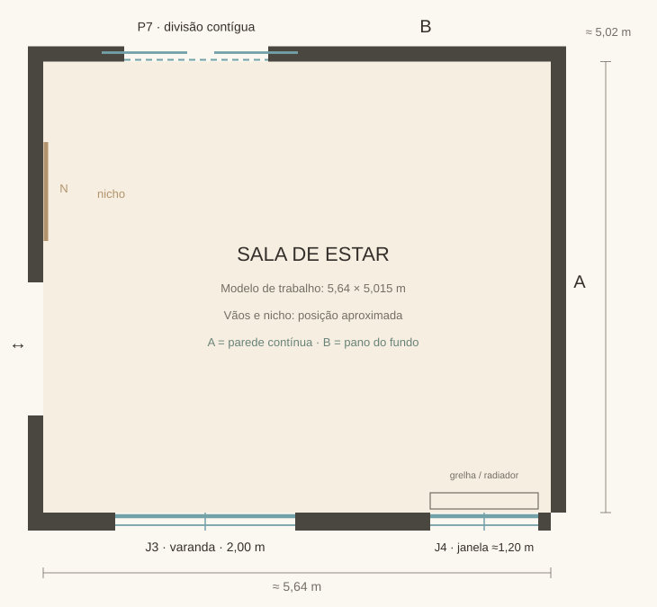
Parede A: pano lateral contínuo, visível nas vistas 1 e 2. Melhor base para projeção.
Parede B: pano do fundo, à direita de P7. A opção 5 depende de confirmar que este pano está livre.
Existente preservado: J3 para a varanda, J4 com grelha/radiador por baixo, P7 para a divisão contígua, passagem lateral e nicho em arco.
Medidas de trabalho: 5,64 × 5,015 m, cerca de 28,28 m². A área inscrita parece ser cerca de 29,8 m². A discrepância, os vãos e o pé-direito precisam de medição.
A sala foi tratada como estar/cinema/leitura, mantendo as refeições na divisão contígua. As perspetivas são imagens conceptuais; prevalecem as plantas para a implantação.